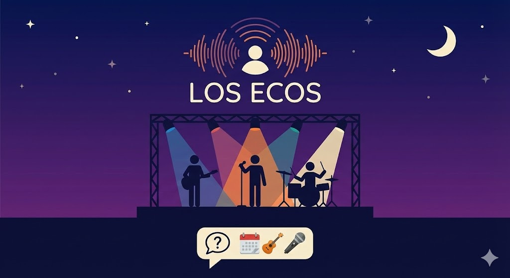

María González
¡Increíble experiencia en la conferencia de astronomía! Aprendí mucho sobre agujeros negros y pude usar un telescopio profesional. ¿Alguien más estuvo allí? 🔭✨
Lee, comenta y conecta con las experiencias de los demás.
¡Increíble experiencia en la conferencia de astronomía! Aprendí mucho sobre agujeros negros y pude usar un telescopio profesional. ¿Alguien más estuvo allí? 🔭✨
Gran partido esta tarde. Ganamos 5-3 y todos dieron lo mejor. ¿Quién se apunta para el próximo domingo? 🏆
La noche de indie fue espectacular. Las tres bandas estuvieron increíbles, especialmente "Los Ecos". ¿Alguien conoce su próximo concierto? 🎸🎤
El workshop de IA fue muy práctico. Implementamos una red neuronal desde cero. Ahora toca seguir aprendiendo por mi cuenta. ¿Alguien recomienda recursos? 🤖💡
Terminé de releer "1984" para el club de lectura. Cada vez encuentro nuevas capas de significado. ¿Qué opinan sobre el final? El próximo libro será "Un mundo feliz" 📖
¡Qué maravilla la proyección de "Casablanca" ayer! Ver clásicos en pantalla grande es otra experiencia. El debate posterior fue muy enriquecedor. ¿Quién viene a la próxima? 🎬🍿